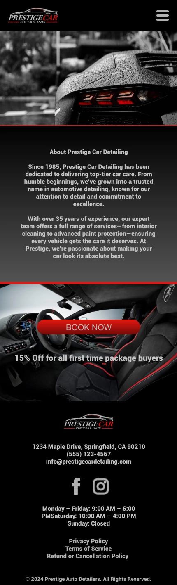
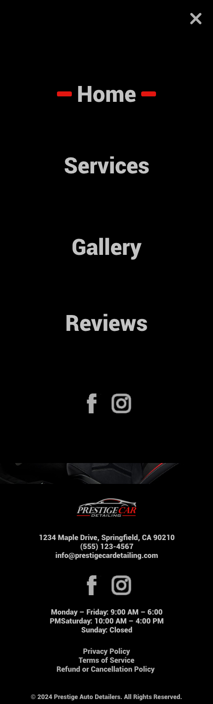
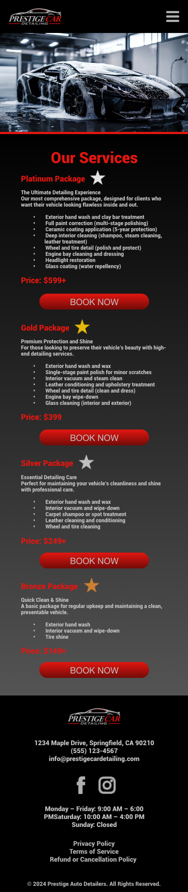
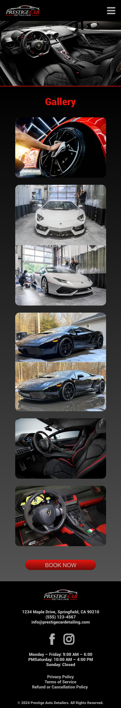
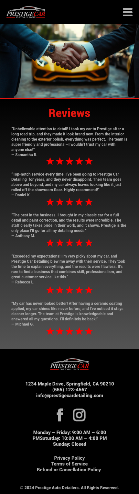
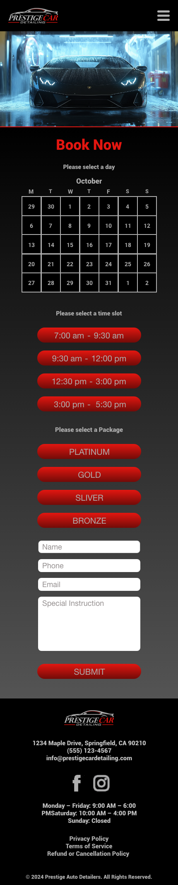

Prestige Auto Detailing
Auto Deatailing Company Mock-up
getFIT Prestige Auto Detailing is a sleek and professional mock-up of a mobile website designed to showcase a modern auto detailing service. Created in Adobe XD, this concept highlights a clean and intuitive interface that allows users to book services, explore detailing packages, and view past appointments seamlessly. With a focus on user experience and visual appeal, this mock-up demonstrates my ability to design functional, aesthetically pleasing web and mobile layouts. Whether for a real business or a concept, Prestige Auto Detailing reflects my expertise in UI/UX design and prototyping.






×

Technologies Used:
- Adobe XD for designing interactive, high-fidelity prototypes with a focus on user experience.
Simulation link: Prestige Auto Detailing